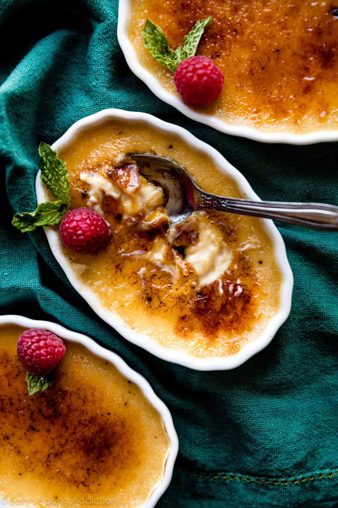

Creme Brulee

Ingredients
- 8 shallow 4-ounce oval ramekins
- 5 large egg yolks
- 3/4 cup (150g) granulated sugar, divided
- 3 cups (720ml) heavy cream or heavy whipping cream*
- 1/2 teaspoon espresso powder (optional but recommended)*
- 1/4 teaspoon salt
- 1 and 1/2 teaspoons pure vanilla extract*
Instructions
- Preheat oven to 325°F (163°C).Whisk the egg yolks and 1/2 cup (100g) of granulated sugar together. Set aside.
- (At this point or before you temper the egg yolks in the next step, bring a small kettle or pot of water to a boil. You’ll need hot water to pour into the baking sheet for the water bath.)
- Heat the heavy cream, espresso powder, and salt together in a medium saucepan over medium heat. As soon as it begins to simmer, remove from heat. Stir in the vanilla extract. Remove about 1/2 cup of warm heavy cream and, in a slow and steady stream, whisk into the egg yolks. Keep those egg yolks moving so they don’t scramble. In a slow and steady stream, pour and whisk the egg yolk mixture into the warm heavy cream.
- Place ramekins in a large baking pan. If you don’t have 1 pan large enough, bake them in a couple pans. Divide custard between each ramekin, filling to the top. Carefully fill the pan with about a 1/2 inch of the hot water. The baking pan will be hot so use an oven mitt to carefully transfer the pan to the oven.
- Bake until the edges are set and centers are a little jiggly. The time depends on the depth of your ramekins. My ramekins are 1-inch and the custard takes 35 minutes. Begin checking them at 30 minutes. For a more accurate sign, they’re done when an instant read thermometer registers 170°F (77°C).
- Remove pan from the oven and, using an oven mitt, remove the ramekins from the pan. Place on a wire rack to cool for at least 1 hour. Place in the refrigerator, loosely covered, and chill for at least 4 hours and up to 2 days before topping.
- Using the remaining granulated sugar, sprinkle a thin layer all over the surface of the chilled custards. Caramelize the sugar with a kitchen torch and serve immediately or store in the refrigerator for up to 1 hour before serving. (Caramelized topping is best enjoyed right away.)
Notes
- Make Ahead Instructions: Prepare the custard mixture through step 4. Cover tightly and refrigerate for up to 1 day before baking. You can bake the custard up to 2 days ahead of time. See step 6.
- Special Tools (affiliate links): Glass Mixing Bowl | Whisk | Medium Saucepan | Oval Ramekins | Large Baking Pan (such as a 9×13-inch baking pan) | Cooling Rack | Kitchen Torch
- Heavy Cream: 3 cups of half-and-half may be substituted for heavy cream. The custard’s texture will be a little lighter.
- Espresso Powder: I know many may not have espresso powder at the ready, so it’s an optional ingredient. But trust me when I say that espresso powder makes a good crème brûlée the best crème brûlée. Leaves great flavor, but the custard doesn’t necessarily taste like coffee. Rather, it’s hinted with espresso flavor. You can find espresso powder in the coffee aisle at the grocery store or online. Instead of espresso powder, you can use 2 teaspoons quality instant coffee.
- Pure Vanilla Extract: Pure vanilla extract is stirred into the heavy cream after it’s heated. You can use the seeds scraped from 1/2 a vanilla bean or 1 teaspoon vanilla bean paste instead. Either can be whisked into the heavy cream when you add the salt and espresso powder.
- Ramekins: Small ramekins ensure the custard cooks evenly, though you could use a large wide ceramic dish instead. I love using individual wide and shallow ramekins so there is more surface area for the caramelized sugar. I suggest these oval ramekins or these circle ramekins. If you don’t have ramekins, use a large wide ceramic or glass dish. Do not use metal. The bake time will increase with a larger size pan.
- Oven Broiler Directions: If you don’t have a kitchen torch, use the oven broiler to caramelize the sugar in step 7. After the custard has chilled as directed in step 6, dust the tops with reserved granulated sugar, then place them on a baking sheet on an oven rack directly under the broiler. Broil on high until caramelized. Keep a close eye on it.
Back to List of Recipes